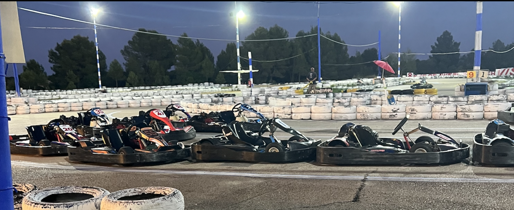
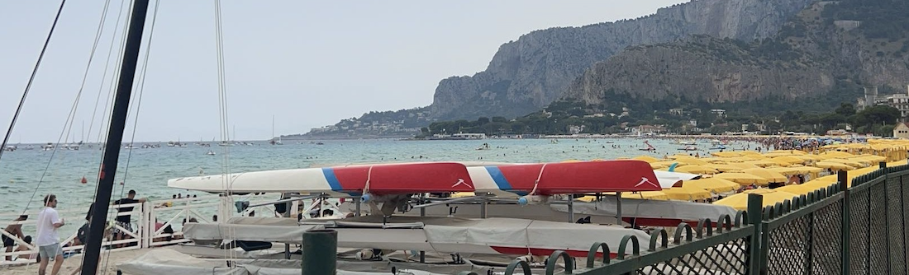
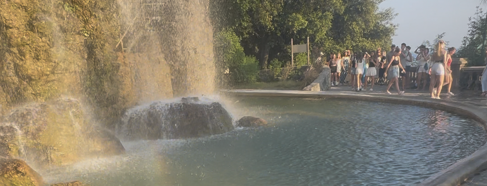
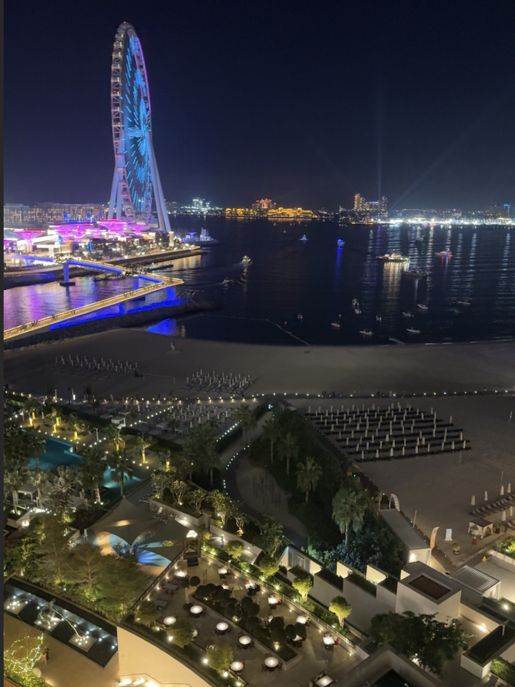
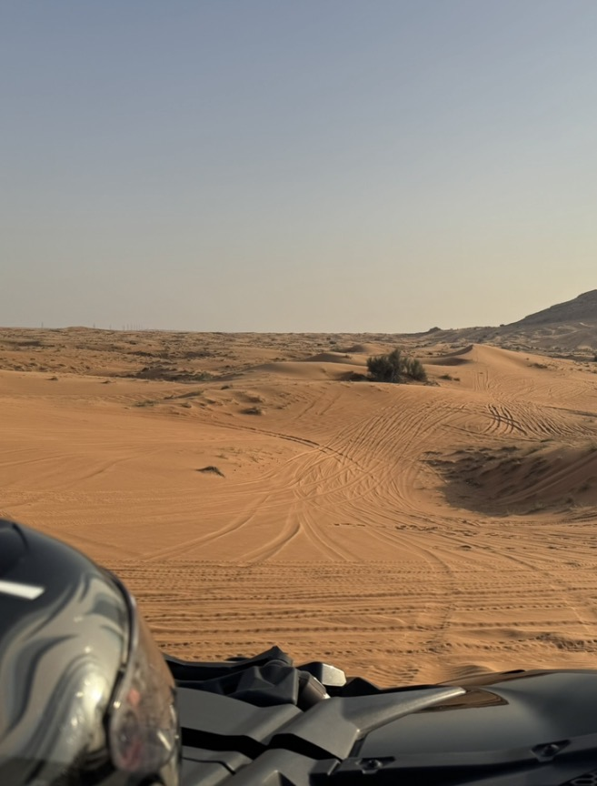

Jeg liker å reise og oppleve nye steder.

Var på Mallorca i Spania med en venn i 2023. Varmt vær og fine strender

Italia er et av mine favorittland. Mye kultur og god mat. Besøkte Sicilia sommeren 2024

Sommeren 2025 var jeg i Nice i Frankrike. Veldig varmt, med mye god mat og fin by


En av de beste reisene mine var til Dubai. Jeg har vært der to ganger, en gang i vinterferien 2023 og i juleferien 2025. Sist gang jeg var der var vi innom Burj Khalifa, verdens høyeste bygning. Der var det god utsikt over hele byen. Dubai har også verdens største vannpark og kjøpesenter hvor vi også var. Utenfor hotellet var det en fin strand og jeg badet mye. Været var fint, det var mye god mat og ikke minst mye luksusbiler.
Den opplevelsen jeg synes var best, var da vi var i ørkenen. Vi kjørte gjennom ørkenen i en buggy og hadde flere stopp hvor vi kunne prøve sandboarding og ri kameler